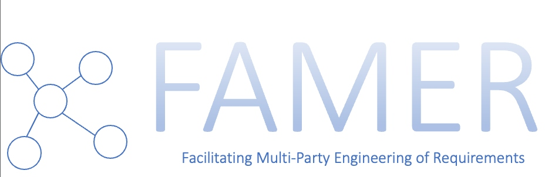

We are proud to announce that on September 1st, 2023, we started to work on a new project funded by Vinnova FFI: FAMER – Facilitating Multi-Party Engineering of Requirements.
FAMER will establish concepts, models, and techniques of effectively building requirements knowledge for safe perception systems. FAMER approaches the requirements challenges in a systems-of-systems context, in which several organizations and disciplines (multiple parties) must be brought together and in which the complexity of the system under construction forces an iterative, collaborative approach across disciplines.
The project will run for three years and will be coordinated by University of Gothenburg. Other partners include Kognic, RISE, Volvo Cars, and Zenseact, thus covering a highly relevant part of the automotive supply chain and enabling applied research in close contact with companies with relevant core business. A newly hired postdoctoral researcher will help to consolidate research across partners:
We believe that the ability to agree on requirements across multiple parties in an effective way will help to increase traffic safety in a future that increasingly relies on automated vehicle technology. You can follow this project on the FAMER homepage at https://ffi-famer.github.io/ and contact Eric Knauss